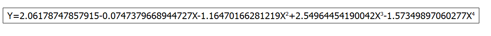
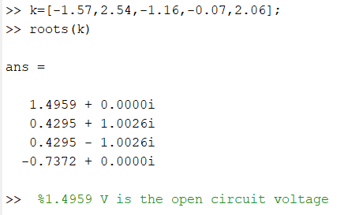

Discussion and Data Analysis
The I-V data should be plotted with I in y-axis and V in x-axis; the curve fitting should be done using appropriate tools as shown below.

Polynomial fit of dataset: Table1_I, using function: a0+a1*x+a2*x^2+a3*x^3+a4*x^4
Y standard errors: Unknown
From x = 0.042 to x = 1.289
a0 = 2.06178747857915 +/- 0.0115984026109416
a1 = -0.0747379668944727 +/- 0.141955243565931
a2 = -1.16470166281219 +/- 0.453834716564529
a3 = 2.54964454190042 +/- 0.525645857201019
a4 = -1.57349897060277 +/- 0.199084496311697
R^2 = 0.999352258113512

Open circuit voltage and short circuit current.
At zero voltage, we get short circuit current value and at zero current we get open circuit voltage.
MATLAB code to determine Open-Circuit Voltage
Conclusion
The Current-Voltage Characteristics were studied through the real demo. It was also simulated through the generated program.